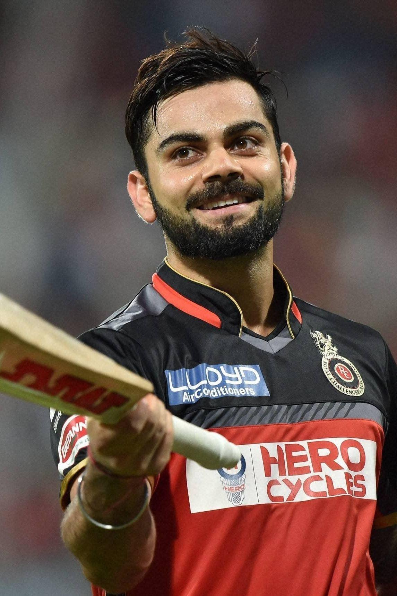

In 2009, RCB underwent a major transformation. Anil Kumble took over as captain, and the team brought in Kevin Pietersen to strengthen the batting. They finished 2nd in the league stage with 9 wins, reaching the final. Despite a strong performance—Anil Kumble took 5 wickets in the opening match—the team lost to Deccan Chargers in a low-scoring final in Johannesburg. Manish Pandey scored the first century by an Indian player in IPL history during this season.
The 2010 season saw Kumble continue as captain, and RCB reached the semi-finals after finishing 4th in the league. They lost to Mumbai Indians by 35 runs but earned a consolation win in the 3rd place playoff against Deccan Chargers. RCB also reached the semi-finals of the Champions League T20, losing to Chennai Super Kings.
In 2011, Virat Kohli was named captain, marking the start of the Kohli-Gayle-De Villiers era. The team finished 1st in the league stage with 10 wins, thanks to explosive performances from Chris Gayle and AB de Villiers. They reached the final but were defeated by Chennai Super Kings, who chased down 156 with two balls to spare. This season also saw the introduction of the "Game for Green" jersey and the rise of iconic shots like the Dil Scoop and Vil Scoop.
In 2012, RCB retained Kohli as captain and continued with Gayle and de Villiers. They won their first game but lost the next three. A late-season revival saw them win 7 of their last 9 matches, finishing 5th and missing the playoffs. A dramatic match against Deccan Chargers at the Chinnaswamy Stadium, where AB de Villiers hit Dale Steyn for sixes, became a highlight
The 2013 season was disappointing. Despite having Chris Gayle and Virat Kohli, RCB finished 5th, failing to qualify for the playoffs. The team struggled with consistency, and their bowling lacked firepower. In 2014, under new head coach Daniel Vettori, RCB improved significantly, finishing 3rd and qualifying for the playoffs. Kohli scored 634 runs, and Mitchell Starc took 14 wickets. They were eliminated in the Eliminator by Chennai Super Kings.
In 2015, RCB started poorly but bounced back with a five-match winning streak. They finished 3rd, reached the final, and faced Mumbai Indians. Despite Kohli's brilliant century, RCB lost by 41 runs. This marked their third final appearance (2009, 2011, 2015), but they remained without a title.